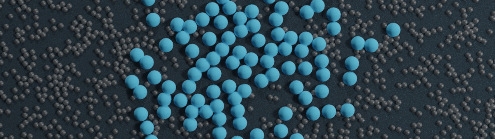

Improved 2D simulation

Objective: This tutorial is a follow up to tutorial 1. Here are going to improve the script previously written and perform slightly more advanced operations, but the simulation will still consists in a 2D box with atoms on the fluid interacting through a simple Lennard-Jones potential (see the image above).
Prerequisite: It is assumed that you followed tutorial 1 first.
Shortcut: If you already have a good grasp on LAMMPS, you can download directly the input scripts that will be written following this tutorial, respectively input.min.lammps and input.run.lammps.
Step 1 -- Atoms creation and minimisation
Let us build a system that is slightly different from tutorial 1, and create the atoms of type 1 and 2 in two separate regions, respectively (see the figure above). Create a new folder, and inside the folder create an input script and call it input.min.lammps (as you can anticipate, this simulation will be separated in multiple input scripts). Like in tutorial 1, copy the following first lines into the input script:
# Initialization
units lj
dimension 2
pair_style lj/cut 2.5
atom_style atomic
boundary p p pLike in tutorial 1, let us create a box from a predefined region. However this time, let us also create two additional regions and create atoms of type 1 and 2 in each region respectively.
# System definition
region mybox block -30 30 -30 30 -0.5 0.5
create_box 2 mybox
region mycylin cylinder z 0 0 15 INF INF side in
region mycylou cylinder z 0 0 15 INF INF side out
create_atoms 1 random 1000 341341 mycylou
create_atoms 2 random 150 127569 mycylinThe 'side in' and 'side out' keywords allow us to define regions that are respectively 'inside the cylinder', and 'everything that is not inside the cylinder'. We can write the remaining of the input script as follow:
# Simulation settings
mass 1 1
mass 2 1
pair_coeff 1 1 1.0 1.0
pair_coeff 2 2 0.5 3.0
neigh_modify every 1 delay 5 check yes
dump mydmp all atom 10 dump.min.lammpstrj
# Run
thermo 10
minimize 1.0e-4 1.0e-6 1000 10000
write_data data.min.lammps
The only novelty with respect to tutorial 1 is the command 'write_data'. This command asks LAMMPS to print the final state of the simulation in a file named 'data.min.lammps'. This file will be used later to restart the simulation from the final state of the energy minimisation step.
Run LAMMPS with the input.min.lammps script. If everything went well, a dump file named dump.min.lammpstrj should appear in the folder, allowing you to visualise the atoms trajectories during minimisation using VMD or Ovito. In addition, a file named data.min.lammps should have been created. If you open this file, you will see that it contains all the information necesary to restart the simulation, such as the number of atoms and the size of the box:
1150 atoms
2 atom types
-3.0000000000000000e+01 3.0000000000000000e+01 xlo xhi
-3.0000000000000000e+01 3.0000000000000000e+01 ylo yhi
-5.0000000000000000e-01 5.0000000000000000e-01 zlo zhi
It also contains the positions and velocities of all the atoms:
Atoms # atomic
345 1 -2.8836527978635523e+01 -2.9323791349242530e+01 0.0000000000000000e+00 0 0 0
979 1 -2.9382597284003467e+01 -2.8335352105920894e+01 0.0000000000000000e+00 0 0 0
435 1 -2.5412729704650008e+01 -2.9697644643809667e+01 0.0000000000000000e+00 0 0 0
533 1 -2.5033422381244598e+01 -2.8519424750144708e+01 0.0000000000000000e+00 0 0 0
347 1 -2.4330866813628781e+01 -2.9373591404712414e+01 0.0000000000000000e+00 0 0 0
448 1 -2.3610197298718113e+01 -2.8518785172533800e+01 0.0000000000000000e+00 0 0 0
(...)
Each column corresponds respectively to the atom identity (from 1 to 1150), the atom type (1 or 2 here), the atom positions (x,y,z) and the atom velocities (vx,vy,vz).
Step 2 -- Restarting from a saved configuration
We are going to create a new input file and start a molecular dynamics simulation directly from the previously saved configuration. In the same folder, create a new file, call it input.run.lammps, and copy the same lines as previously:
# Initialization
units lj
dimension 2
pair_style lj/cut 2.5
atom_style atomic
boundary p p pNow instead of creating a new region, we simply add the following command:
# System definition
read_data data.min.lammps
By visualising the previously generated dump.min.lammpstrj file, you may have noticed that some atoms have moved from one region to the other during minimisation:
In order to start the simulation from a clean state, with only atoms of type 2 within the cylinder and atoms of type 1 outside the cylinder, let us delete the misplaced atoms:
region mycylin cylinder z 0 0 15 INF INF side in
region mycylou cylinder z 0 0 15 INF INF side out
group mytype1 type 1
group mytype2 type 2
group incyl region mycylin
group oucyl region mycylou
group type1in intersect mytype1 incyl
group type2ou intersect mytype2 oucyl
delete_atoms group type1in
delete_atoms group type2ou
These commands will respectively recreate the previously defined regions (regions are not saved by the write_data command), create groups, and finally delete the atoms of type 1 that are located within the cylinder, as well as the atoms of type 2 that are located outside the cylinder. If you run LAMMPS, you can see in the terminal how many atoms are in each group, and how many atoms have been deleted:
1000 atoms in group mytype1
150 atoms in group mytype2
120 atoms in group incyl
1030 atoms in group oucyl
1 atoms in group type1in
31 atoms in group type2ou
Deleted 1 atoms, new total = 1149
Deleted 31 atoms, new total = 1118
Similarly to previously, add the following simulation settings:
# Simulation settings
mass 1 1
mass 2 1
pair_coeff 1 1 1.0 1.0
pair_coeff 2 2 0.5 3.0
neigh_modify every 1 delay 5 check yes
dump mydmp all atom 500 dump.run.lammpstrj
In addition, it would be great to extract data directly from the simulation. For example, let us extract the number of atoms of each type in each region, by adding the following commands:
variable Ntype1in equal count(mytype1,mycylin)
variable Ntype1ou equal count(mytype1,mycylou)
variable Ntype2in equal count(mytype2,mycylin)
variable Ntype2ou equal count(mytype2,mycylou)
fix myat1 all ave/time 1000 1 1000 v_Ntype1in v_Ntype1ou file population1vstime.dat
fix myat2 all ave/time 1000 1 1000 v_Ntype2in v_Ntype2ou file population2vstime.dat
The fixes ave/times allow to evaluate previously defined variables and print the values (here every 1000 steps) into data file. Here each variable simply counts the number of atoms of a specific group in a specific region. Finally, let us terminate the script by adding:
# Run
velocity all create 1.0 4928459 mom yes rot yes dist gaussian
fix mynve all nve
fix mylgv all langevin 1.0 1.0 0.1 1530917 zero yes
fix myefn all enforce2d
timestep 0.005
thermo 50000
run 1500000
There are a few differences with tutorial 1. First, the 'velocity create' command attributes and initial velocity to all the atoms. The initial velocity is chosen so that the initial temperature is equal to 1 (unitless). The additional keywords ensure that no linear momentum and no angular momentum are given to the system, and that the generated velocities are distributed as a Gaussian. Another difference is the 'zero yes' keyword in the langevin thermostat, that ensures that the total random force is equal to zero.
After running the simulation, you can observe the number of atoms in each region from the generated data files, using for example xmgrace:
The system looks like that:
Step 3 -- Going further
You can play with the current script, for example by trying to impose different temperatures. Since the diffusion coefficient of an atom depends strongly on the temperature, you should see variations in the characteristic equilibrium time.